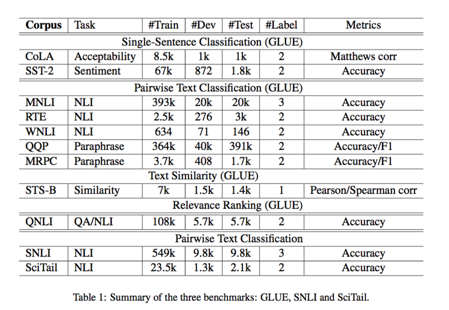
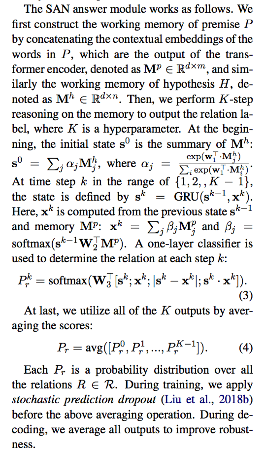
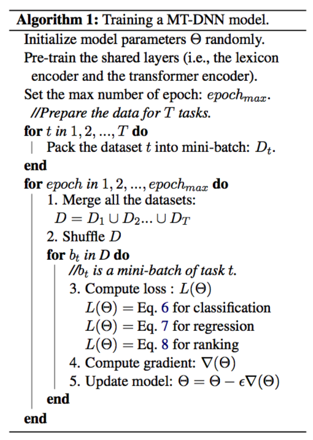
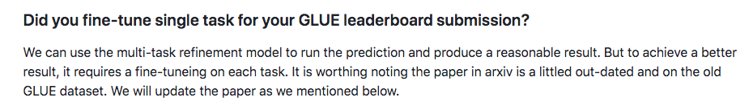
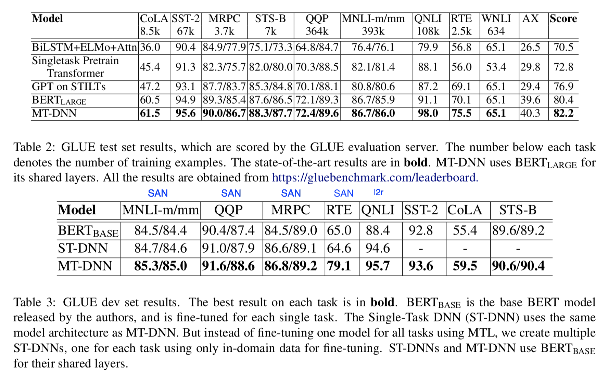
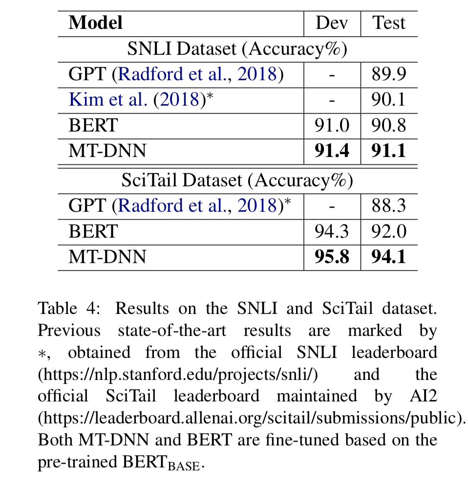
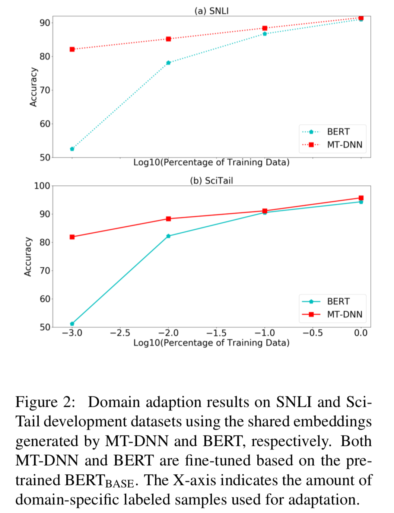

想写这篇蛮久的，但由于之前一直忙着搞别的事情（好吧就是懒），一直拖着。刚好最近有用这个方面的需求，就又读了一遍论文和github上的一些实现。
大部分的博客都只是粗略翻译论文，然而光看论文，往往会忽略一些实现细节，所以笔者最近在尝试将论文笔记和源码解析结合起来，就从这篇MT-DNN开始吧。希望大家多多提意见。
Paper：Multi-Task Deep Neural Networks for Natural Language Understanding
其实作者（Xiaodong Liu）早在15年就写过一篇Multi-task相关的论文，只不过当时还没有bert这样优秀的预训练表达层，在bert横扫各大榜单之后，作者将之前多任务的概念和bert相结合，duang~就出了这一篇在GLUE、SNLI和SciTail创下新的SOTA的论文。
Intuition
会滑雪的人，学滑冰要容易的多。（笔者试过，反过来不大成立，手动狗头）
Motivation
监督学习需要大量监督数据，但正常情况下咱都是没有的。MTL（multi-task learning）可以提高low-resource任务的表现。
MTL能起到正则的作用，减轻模型对特定任务的过拟合。
bert之类的预训练模型充分利用了无监督数据。MTL作为补充，进一步利用了out-domain的监督数据。
Model
模型很简单，看一下这个图：

底层share了bert的表达层，输出层为每个任务设计了各自的输入形式和loss计算方式。
任务和loss计算
任务分类及数据
GLUE
- 单句分类（Single-Sentence Classification）：
- CoLA（Corpus of Linguistic Acceptability）：判断英语句子是否语法正确
- SST-2（Stanford Sentiment Treebank）：影评情感分类
- 文本相似度（Text Similarity）：
- STS-B（Semantic Textual Similarity Bench-mark）：人类标注的1-5的语义相似度数据集。
- 对句分类（Pairwise Text Classification）：
- RTE（Recognizing Textual Entailment）：entailment or not_entailment
- MNLI（Multi-Genre Natural Language Inference）：entailment，contradiction，neural
- QQP（Quora Question Pairs）：判断两个问题是否问的是同一内容。
- MRPC（Microsoft Research Paraphrase Corpus）：判断是否两个句子是语义相同的。
- WNLI（Winograd NLI）：Wino-grad Schema dataset得到的推理任务。
- 相关性排序（Relevance Ranking）：
- QNLI（Stanford Question Answering）：问答对数据集。
Out-domain
- SNLI（Stanford Natural Language Inference）：Flickr30里人工标注了hypotheses的推理数据集
- SciTail（Science Question Answering Textual Entailment）：科学问题的推理，更难。

loss计算
1. 单句分类
交叉熵：
$$
P_r(c|X) = \text{softmax}(W^T_{SST}\cdot x)\\
L(\Theta) = -\sum_c{\mathbb{I}(X, c) \log (P_r(c|X)) }
$$
2. 文本相似度
均方误差：
$$
\text{Sim}(X_1, X_2) = \text{sigmoid}(w^T_{STS}\cdot x)\\
L(\Theta) = (y-\text{Sim}(X_1, X_2))^2
$$
3. 对句分类
前面比较常见，这个对句分类作者处理的方式比较特殊，用了18年作者自己提出的一种叫 SAN（stochastic answer network）的输出层构建方式，推理过程有点繁琐，给大家贴个图。

注意图中的$m$，$n$ 都是sequence length。
总结起来就是，作者得到query和premise分别的token-wise的表达之后，在他们两个之间做了一个attention，然后开辟了一个新的状态维度做RNN，从而得到多次预测结果，再做平均（类似于人推理时，多次思考才能得到最终的判断）。作者在后面证明了 SAN 结构能带来0.1%~0.5%的提升。
loss也是交叉熵：
$$
L(\Theta) = -\sum_c{\mathbb{I}(X, c) \log (P_r(c|X)) }
$$
4. 相关性排序
作者的这个loss设计还是挺有意思的，不用简单的二分类来做这个任务，而是用learning2rank的范式，对于每个query $Q$ 采样 $N$ 个candidates，其中$A^+$是正确答案，其他的都是是错误答案。
负对数似然：
$$
\text{Rel}(Q,A)=\text{sigmoid}(w^T_{QNLI} \cdot x)\\
L(\Theta)=-\frac{\text{exp}(\text{Rel}(Q,A^+))}{\sum_{A’\in{\mathcal{A}}}\text{exp}(Rel(Q,A’))}
$$
训练过程

训练过程就是把所有数据合并在一起，每个batch只有单一任务的数据，同时会带有一个task-type的标志，这样模型就知道该走哪一条loss计算的路径。
论文里并没有提及对于单个任务，之后还要不要再单独Fine-tune一下，不过参考github的FAQ，再FT一下，结果会更好。

实验
实现细节
Optimizer：Adamax（这个地方跟bert不太一样）
lr：5e-5
batch size：32
max_num of epochs：5
SAN steps：5
warm-up：0.1
clip gradient norm：1
max seq length：512
GLUE结果

从Table 2 可以看出来，MT-DNN在每一项都超过了bert，而且数据越少的任务，提升越明显，对于QQP和MNLI来说，提升就没那么明显了。
Table 3中的ST-DNN名字很玄乎，其实与bert不同的就是用了文中的复杂了一点的输出模块和loss的设计，比如SAN，learning2rank这些，单独训练各个任务。可见都是有一定程度的提升。所以MT-DNN相对于bert的提升其实来自于 multi task 和 special output module 两个部分。
SNLI 和 SciTail 结果

在得到mult-task训练后的ckpt后，用这个weights去fine tune新的任务，结果和GLUE的保持一致，都有提升，且小数据集任务的提升更明显。
Domain 适应性结果
这个结果比较有趣，笔者认为也是比较重要的点，MT-DNN得到的weights相对于bert的weights能在很少的数据下达到不错的效果，且数据越少，相对bert的提升就越大。(甚至23个训练样本就能达到82.1%的准确率，amazing啊。)

Conclusion
打个总结：
- MT-DNN的优点：
- 数据要求少
- 泛化能力强，不容易过拟合
- MT-DNN的缺点：
- 实用性：实际应用中也许并不能找到特别合适的，且高质量的多任务
- 训练慢啊，MT-DNN作者用了4张v100，普通业务要不起这个条件，所以MT-DNN的定位其实类似于bert，训练好了就别乱动了，当pretrain-model用。
- 作者认为的Further work
- 更深度的share weights
- 更有效的训练方法
- 用更可控的方式融入文本的语言结构（这点个人感觉不适用于现在大刀阔斧搞预训练模型的情况）
Code
源码地址：https://github.com/namisan/mt-dnn
未完待续。。。